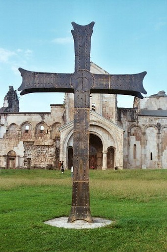
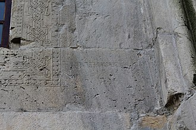

get to know georgia
ბაგრატის ტაძარი — ღვთისმშობლის მიძინების სახელობის ტაძარი, აგებული 1003 წელს, ბაგრატ III-ის (975–1014) მეფობაში, ქუთაისში, უქიმერიონის გორაზე. ძეგლი წარმოადგენს ქართული შუასაუკუნეების საეკლესიო არქიტექტურაში საეტაპო მნიშვნელობის ტაძარს, როგორც თავისი არქიტექტურული გადაწყვეტით, ასევე ისტორიული და სიმბოლური მნიშვნელობითაც.

ბაგრატის ტაძარი (ქუთაისის ყოვლადწმინდა ღვთისმშობლის სახელობის საკათედრო ტაძარი) მდებარეობს ქალაქ ქუთაისში, მდინარე რიონის მარჯვენა ნაპირთან აღმართულ კლდოვან ბორცვზე, რომელსაც უქიმერიონს უწოდებენ. ქალაქი ქუთაისი ისტორიულად ორ ნაწილად იყოფოდა: ზედა და ქვედა ნაწილებად, ბაგრატის ტაძარი სწორედ ქალაქის ზედა ნაწილში მდებარეობდა და საფორტიფიკაციო ნაგებობებში იყო ჩაფლული.
აღსანიშნავია, რომ ქუთაისის არქეოლოგიურმა ექსპედიციამ, რომელმაც 2003 წლიდან მოყოლებული ხუთი წლის განმავლობაში აწარმოებდა აქრეოლოგიურ გათხრებს საკუთრივ ტაძრის ინტერიერ-ექსტერიერში, ადამიანის ზემოქმედების კვალი ენეოლით-ადრებრინჯაოს ხანიდან აღმოაჩინა. გაირკვა, რომ დღევანდელი ბაგრატის ტაძარი რამდენიმე ნაგებობაზეა დაშენებული, უძველესი შენობა სავარაუდოდ წინარეანტიკური ხანით თარიღდება, თუმცა ყველაზე საინტერესო მე-6 საუკუნის უზარმაზარი ბაზილიკის ნაშთია, რომლის სიგრძე 30 მეტრს უდრის, ხოლო სიგანე 25 მეტრს, სავარაუდოდ ის სპარსელებმა დაანგრიეს. აქვე აღმოჩნდა VII–VIII საუკუნის ახალი ტაძარი ე.წ. „ქუთათისის საყდარი“, რომელიც სავარაუდოდ წყაროებში ნახსენები ის ტაძარი უნდა იყოს, სადაც ქართლის ერისმთავარი სტეფანოზი იყო დაკრძალული. ბაგრატის ტაძრის ზოგი კედელი სწორედ ძველ ნაგებობებზეა დაშენებული
ბაგრატ III ბაგრატიონმა (978–1014 წ.), რომელიც იწოდებოდა „აფხაზთა, ქართველთა, რანთა და კახთა“ მეფედ, გააერთიანა ყველა ქართული მიწა (გარდა თბილისისა) და ერთიანობის სიმბოლოდ ქუთაისში (რომელიც 978–1122 წლებში საქართველოს დედაქალაქი იყო) ააგო გრანდიოზული საკათედრო ტაძარი, რომელსაც ხშირად „ბაგრატის ტაძრად“ მოიხსენიებდა ხალხი. ქუთათისის კათედრალი ბაგრატ III-ისა და მისი დედის-ეგრის-აფხაზეთის მეფის გიორგი II ის ასულის გურანდუხტ დედოფლის შემწეობით აშენდა, რასაც გვამცნობს ამავე ტაძრის კედლებზე არსებული წარწერები. ქუთაისის დიდებული ტაძარი ყოვლადწმინდა მარიამ ღვთისმშობლის სახელზე აკურთხეს. ვახუშტი ბატონიშვილის ცნობით: „აქა აღაშენა ბაგრატ ყოვლად წმიდისა ეკლესია შუანიერი, გუმბათიანი, სრულიად სოფიის კენჭით შინაგან ქმნული და მარმარილოთა სპეტაკითა, წითლითა და ჭრელითა და სუეტებითვე მისითავე და ყოვლითა შემკობილებითა სრული და ფრიად დიდი“.
ბაგრატის ტაძრის წარწერიდან ჩანს, შენობა დასრულებულა 1003 წელს: „ოდეს განმტკიცნა იატაკი. ქორონიკონი იყო 223“ ამბობს წარწერა. აღსანიშნავია, რომ თარიღი წარწერაში არაბული ციფრებით არის მოცემული, რაც არაბული ციფრების ხმარების უადრესი შემთხვევაა საქართველოში. იქვე არის მეორე წარწერა: „ჰოი მეუფეო, მფლობელო ყოველთა სუფევათაო, უმეტეს ადიდე ძლიერი ბაგრატ კურაპალატი, აფხაზთა და ქართველტა მეფე, თანა მამით, დედით, დეოფლით და ძით მ(ათით)...ამინ“. აღმოსავლეთის ფასადზე კი სარკმელის თავზე მოთავსებული წარწერა შემდეგი შინაარსისაა: „ქ. შეწევნითა ღმრთისათა, ბაგრატისაგან, ნებითა ღმრთისათა და ქართველთა მეფ(ისა)თისა გურანდუხტ დედოფლისა აღეშენა წმიდაი ესე საყდარი ხელითა...“ (წარწერა წყდება).
კურთხევა როგორც ჩანს გრანდიოზულ ვითარებაში ჩატარდა, მოწვეული იყო მრავალი საპატიო პირი. ძველი ქართველი მემატიანე გვამცნობს: „აკურთხა ეკლესია ქუთათისა განგებითა დიდითა და მიუწდომელითა. რამეთუ შემოკრიბნა მახლობელნი ყოველნი ხელმწიფენი და კათალიკოსნი, მღვდელთმოძღუარნი და ყოველთა მონასტერთა წინამძღუარნი და ყოველნი დიდებულნი ზემონი და ქუემონი მამულისა და სამეფოსა მისისა მყოფნი და სხუათა ყოველთა სახელმწიფოთანი“, როგორც ჩანს ამ მასშტაბურ ზეიმს უპირველესად ზოგადეროვნული მნიშვნელობა ჰქონდა და ერთიანი სახელმწიფოს ძალას და შესაძლებლობას უსვამდა ხაზს.
მშენებელი ოსტატის სახელი არ შემოინახა. აღმოსავლეთ სარკმელთან შემდეგი შინაარსის წარწერაა: „აღეშენა წმინდა ...ესე საყდარი..ხელითა..“ თუმცა ოსტატის სახელი გადაშლილია. ტაძრის წარწერებში ასევე მოხსენიებულია ზაქარბერ თურმანიძე და ოქროპირი. ერთი ოქროპირი ბაგრატ მეოთხის თანამედროვე კათალიკოსი იყო, „ქართლის ცხოვრებაში“ ოქროპირ კათალიკოსზე კი შემდეგი ცნობებია დაცული: „წმინდამან ამან პატრიარქმან ოქროპირ (მა) მრავალნი ეკლესიანი აღაშენა და განაახლნა“, თუმცა დაზუსტებით თქმა ძნელია ნამდვილად ის იხსენიებოდა თუ არა წარწერაში.
ტაძრის აგებიდან ცოტა ხანში, ჩრდილო დასავლეთის კუთხეში დასავლეთიდან მიაშენეს სამსართულიანი საცხოვრებელი კოშკი, სამივე სართულში თითო ოთახით, ბუხრებით და თახჩებით. სავარაუდოდ ამ კოშკში ქუთათელი ეპისკოპოსი ცხოვრობდა. ცალკეული სამუშაოები ტაძარზე 1008 წლამდე გაგრძელდა. 1020-იან წლებში კი ტაძარს მიაშენეს დასავლეთისა და სამხრეთის კარიბჭეები.
ბაგრატის ტაძარს როგორც ჩანს მტრის მახვილი მალევე შეეხო, როგორც დავით აღმაშენებლის უცნობი ისტორიკოსი წერს, გიორგი მეორეს დროს თურქები საქართველოს შემოსევიან „ასისფორნი და კლარჯეთი ზღვის პირამდის, შავშეთი, აჭარა, სამცხე, ქართლი, არგუეთი, სამოქალაქო და ჭყონდიდი აღივსო თურქითა, მოისრა და ტყუე იქმნა ამათ ქუეყანათა მკუიდრი ყოველი და მასვე ერთსა დღესა დაწუეს ქუთათისი და არტანუჯი და უდაბნონი კლარჯეთისანი“ ბუნებრივია ქუთაისის დაწვის დროს მტერმა დააზიანა ბაგრატის ტაძარიც.
XI საუკუნეში თურქთაგან გადამწვარი და აოხრებული ქუთათისის განახლება დავით აღმაშენებლის დროს მოხდა. სავარაუდოდ აღორძინება ბაგრატის ტაძარსაც შეეხებოდა. ბაგრატის ტაძრის როლი რა თქმა უნდა არც მომდევნო საუკუნეებში დაკნინებულა, ქუთათელს მეფეთა კურთხევისას მნიშვნელოვანი როლი და გვირგვინის დადგმის პატივი ჰქონია, რაც ხაზგასმითაა აღნიშნული თამარის პერიოდის ისტორიკოსთან. ბაგრატის ტაძრის წინამძღვარი თამარის და სამეფო ხელისუფლების ერთგული რჩებოდა, მაშინაც კი, როცა ექსორიაქმნილი გიორგი რუსი გადმოვიდა საქართველოში და დასავლეთ საქართველოს ფეოდალებისაგან ზურგგამაგრებული ცენტრალურ ხელისფლებას დაუპირისპირდა, ვახუშტი ბაგრატიონი წერდა: „გარნა კათალიკოსი აფხაზეთისა და ქუთათელი არა შეერთებულ იყვნენ ზრახვასა მას ბოროტს და წინაშე იყვნენ თამარისა“.
ქუთაისის ტაძარში აკურთხეს მოგვიანებით დავით რუსუდანის ძე ჯერ საქართველოს მეფედ, შემდეგ დასავლეთ საქართველოს მეფედ. 1490 წელს კონსტანტინე II-ს მიერ მოწვეულმა სამეფო დარბაზმა საქართველოს ფაქტობრივი დაშლა ფორმალურადაც სცნო და ამის შემდეგ ქუთაისი ხდება იმერეთის სამეფოს დედაქალაქი. 1510 წელს იმერეთში შემოჭრილ ოსმალებს ბაგრატ იმერთა მეფე ვერ წინააღუდგა, ოსმალებმა ვახუშტის სიტყვებით „დაწუეს ქუთაისი და გელათი“, ბუნებრივია მტრის ხელს ვერც ბაგრატის ტაძარი გადაურჩებოდა. (აღსანიშნავია, რომ 2003 წლიდან მიმდინარე ქუთაისის არქეოლოგიურმა ექსპედიციამ 1510 წლის დიდი ხანძრის კვალი დაადასტურა ბაგრატის ტაძრის ინტერიერში.)